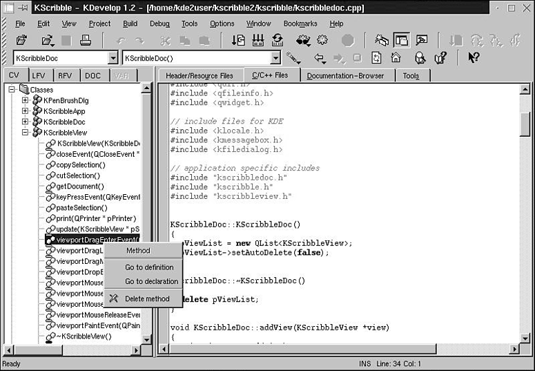

18.4. The Classbrowser and Your ProjectNow have a closer look at the actual work of a developer and what will help you most while implementing your classes and functions: the Classbrowser and the Classtools. While implementing KDevelop, we have thought over how to make information about the user's project as transparent as possible with a reasonably fast viewer. Users who know other IDEs are already used to the concept of a Classbrowser, but I know of at least some IDEs where this feature either doesn't work correctly or it slows down the machine so much that you need to have some resources in the back to develop at a reasonable speed. KDevelop, on the other hand, contains a Classparser that scans all files while loading a project—without affecting performance. The Classtree then displays the results of this scan and automatically updates itself either on saving by the autosave functionality or when running or compiling your application. A manual refresh can be done as well to rescan all sources. The quality and stability of the Classparser has proven so well that it is already used in various other GPL projects, such as KUML (a development tool using the Unified Modeling Language) for similar purposes. The Classparser takes all source files, reads them, and looks up all classes, their methods and members according to their access scope (public, private, or protected, including signals or slots), their inheritance, namespaces, and global functions and attributes. Then it builds a database that stores this information and creates a Tree View that contains these classes, which can be unfolded to display their members. As a result, you can use the Classbrowser to rapidly browse your sources, keeping an overview of which names you have already used, and you can navigate down into your project. Just selecting a class opens the right header file and sets the cursor at the class declaration. Over members or C functions, it opens the right implementation file—it doesn't matter how many you like to use to implement a class—and sets the cursor at the head of the implementation. (See Figure 18.7.) Figure 18.7. The KDevelop Classbrowser displaying the KDevelop source code, graphically structured with an opened class allowing direct access to methods and attributes.  This results in a new habit of treating source files from the programmer's view. Formerly, the programmer had to take care to remember where things were declared and implemented to find them again when they were needed. When working on large projects, this is a major undertaking that often results in a time-consuming search for interfaces and their accompanying implementation. The way KDevelop treats your sources makes you totally independent of where you put something. You have access to it at any time via the Classbrowser. The Classbrowser displays a project's objects as items collected in the following folder tree:
Easy to understand, isn't it? Now, besides the basic functionality of simple mouse clicks over these folders and their contents, the Classviewer offers even more by pop-up menus over the items it displays. Over the Classes folder, the menu offers
Over a class, the pop-up menu allows the following options:
Over a selected function in the Globals folder, the pop-up menu offers going to the declaration and definition, as well. You see how easily you can handle your project in a more object-oriented way than what usual development has meant under UNIX when you're supported by the Classbrowser. In my experience, the Classbrowser usually significantly reduces the time of development because you do not have to look up and remember everything yourself, so it is a feature every developer will like from the start of using KDevelop. |